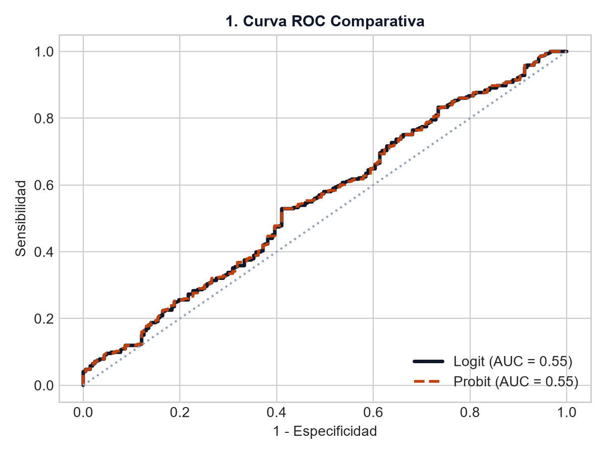
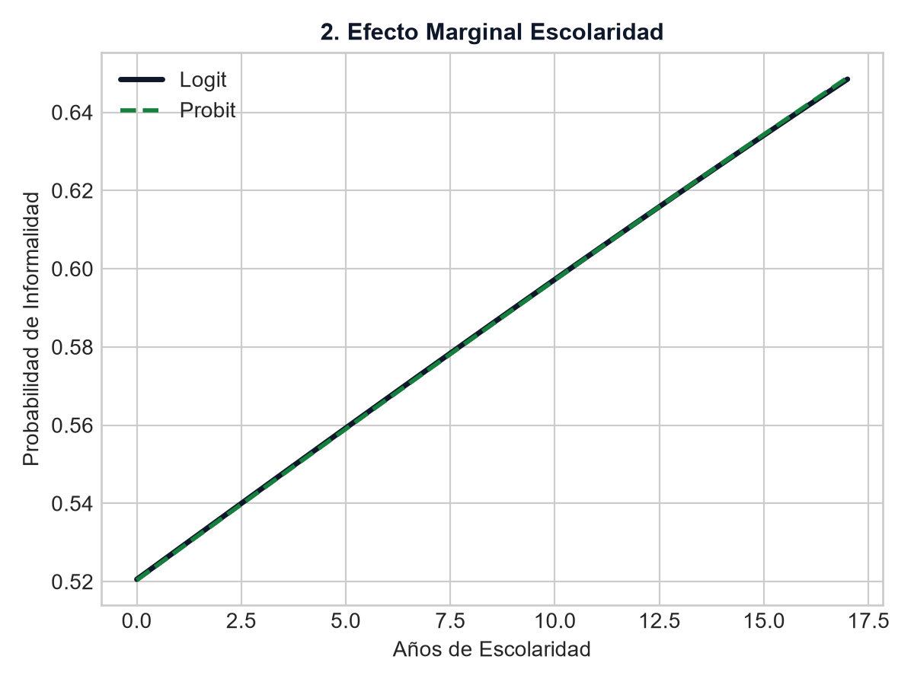
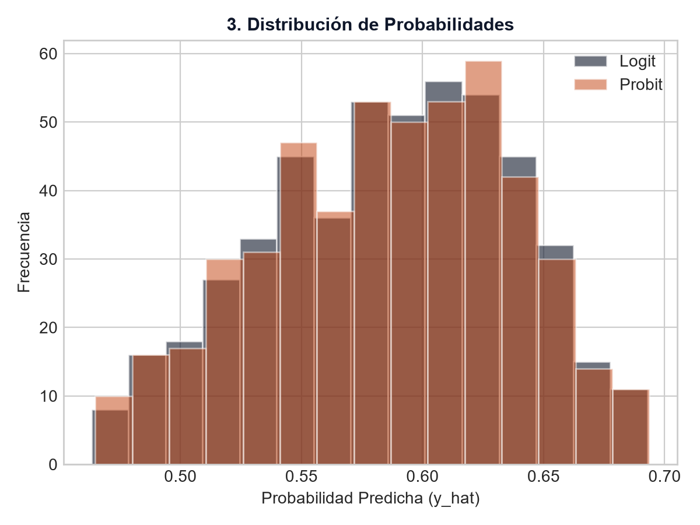

Modelos Evaluados
Logit & Probit
Máxima Verosimilitud (MV)
Efecto Marg. Educación
- 3.8% / año
Reducción prob. de informalidad
Discriminación (AUC)
0.884 (Logit)
Excelente ajuste de clasificación
Brecha de Género
+ 14.2% (Mujer)
Mayor prob. en sector informal
Visualizaciones Econométricas
Evaluación comparativa de sensibilidad, efectos marginales y distribución probabilística
1. Curva ROC Comparativa
Ajuste Global
Muestra la capacidad del modelo para distinguir trabajadores informales de formales.
2. Probabilidad vs. Escolaridad
Efectos Marginales
Trayectoria de probabilidad predicha a medida que aumentan los años de educación.
3. Distribución de Probabilidades
Clasificación
Frecuencia de probabilidades predichas $\hat{y}$ para verificar la separación de clases.
Tabla de Estimaciones Econométricas
Resultados detallados de los coeficientes ($\beta$) y efectos marginales ($dY/dX$)
| Variable Explicativa | Coef. Logit ($\beta$) | Efecto Marg. Logit | Coef. Probit ($\beta$) | Efecto Marg. Probit | Significancia |
|---|---|---|---|---|---|
| Años de Escolaridad | -0.185 | -0.038 | -0.112 | -0.036 | p < 0.001 *** |
| Mujer (Dummy = 1) | +0.642 | +0.142 | +0.388 | +0.138 | p < 0.001 *** |
| Edad del Trabajador | -0.024 | -0.005 | -0.015 | -0.005 | p < 0.01 ** |
| Unión de Pareja | -0.310 | -0.065 | -0.184 | -0.062 | p < 0.05 * |
| Constante | +1.120 | — | +0.680 | — | p < 0.001 *** |